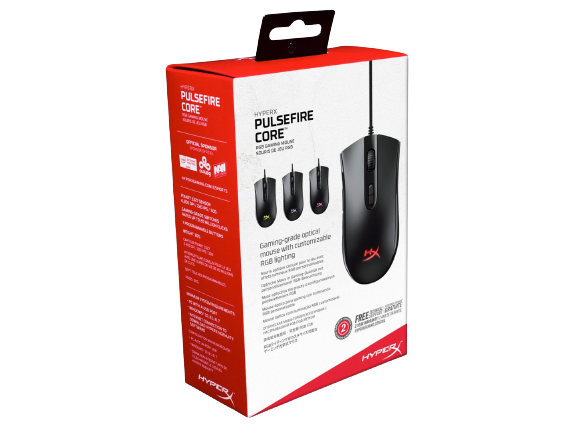
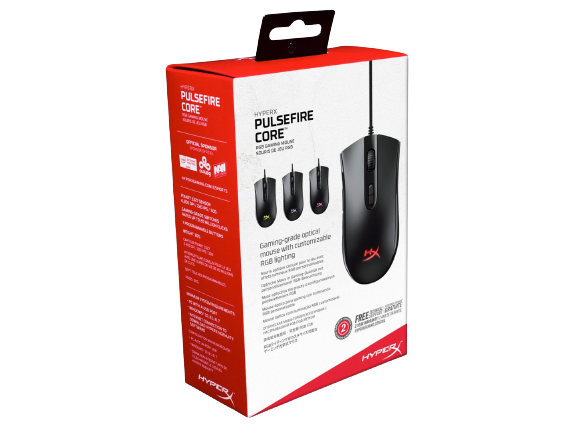

Миша дротова ігрова HyperX Pulsefire Core
Опис товару:
Миша HyperX Pulsefire Core надає все найнеобхідніше геймерам, які хочуть отримати надійну і зручну дротову миша з RGB-підсвічуванням. Оптичний датчик Pixart 3327 забезпечує точний і плавний трекінг без апаратного прискорення і має нативні настройки дозволу до 6 200 DPI (точок на дюйм). Ергономічна миша Pulsefire Core має рельєфні бічні поверхні для захоплення, щоб її можна було зручно тримати і вона не вислизала, а її симетрична форма однаково добре підходить як для хвата долонею, так і для "Кігтевого" хвату. Вона має високоякісні перемикачі з чіткою тактильним зворотним зв'язком, розраховані на 20 мільйонів натискань. Регулюйте підсвічування, настройки дозволу і макроси для 7 програмованих кнопок за допомогою ПО HyperX NGenuity і налаштовуйте свою миша так, як вам зручно. Великі ковзаючі площини Pulsefire Core допомагають домогтися точного націлювання, забезпечуючи плавне, контрольоване переміщення, коли ви рухаєте миша.
Характеристика товару:
- Миша — Геймерська
- Тип підключення — Дротове
- Тип сенсора миші — Оптичний
- Тип живлення — Мережа
- Роздільна здатність оптичного сенсора миші (dpi) — 6200 dpi
- Кількість клавіш — 7 + колесо прокрутки
- Інтерфейс підключення — USB
- Довжина проводу миші — 1,8 м
- Ергономіка миші — Для правої руки
- Підсвітка — Так
- Комплектація — Мишка, документація
- Особливості — Програмовані кнопки
- Ресурс правої та лівої кнопок — 20 мільйонів натисків
- Частота опроса — 1000 Гц
- Максимальная скорость — 5.6 м/с
- Максимальное ускорение — 30g
- Подсветка — RGB (повнокольорова)
- Кількість рівнів яскравості — 4
- Розміри (ВхШхГ) — 41,3 х 119,3 х 63,9 мм
- Гарантійний термін — 2 роки
- Країна виробництва — Китай
| Гарантія виробника | Гарантія магазину | Оригінальний |
|---|---|---|
| Так | Так | Так |